Son aquellos granos o pedazos de granos que presentan una alteración sustancial en su constitución. Se consideran como tales a los ardidos y/o dañados por calor, granos verdes, helados, brotados, calcinados, roídos por isoca y roídos en su germen.
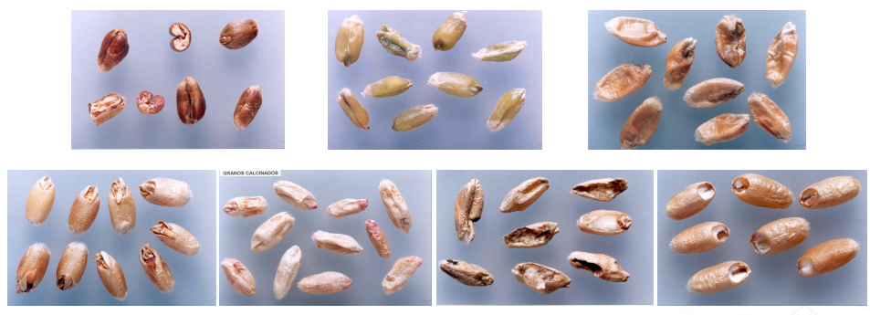Son aquellos granos o pedazos de granos que presentan un oscurecimiento en su tonalidad natural, debido a un proceso fermentativo o a la acción de elevadas temperaturas.
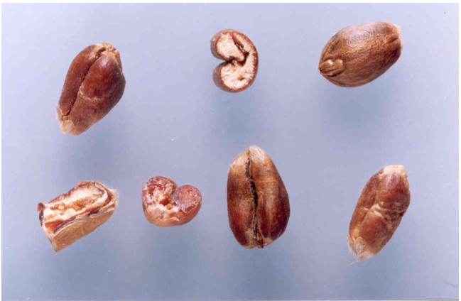Son aquellos que presentan una manifiesta coloración verdosa debido a inmadurez fisiológica.
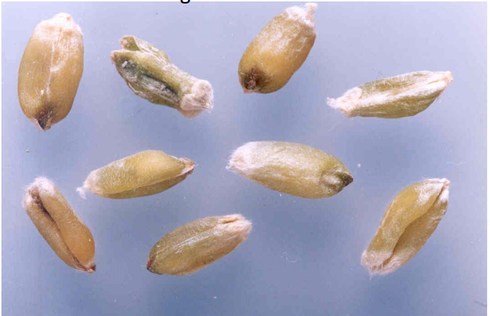Son aquellos que presentan concavidades pronunciadas en sus caras laterales.
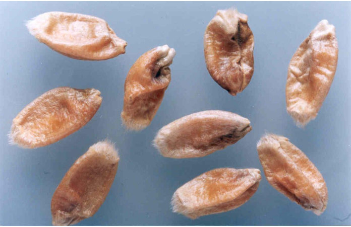Son aquellos en los que se ha iniciado el proceso de germinación. Tal hecho se manifiesta por una ruptura de la cubierta del germen, a través de la cual asoma el brote.
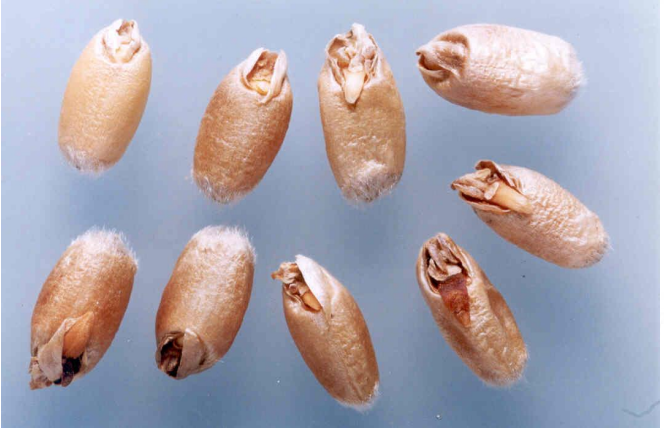Son los que presentan una coloración blanquecina, a veces con zonas de color rosado, cuyos endospermas presentan aspecto yesoso y que pueden desmenuzarse cuando se ejerce una leve presión sobre ellos.
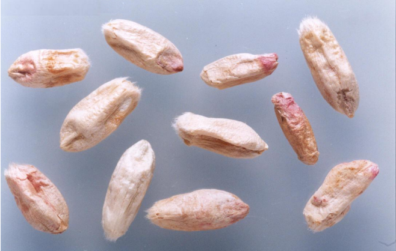 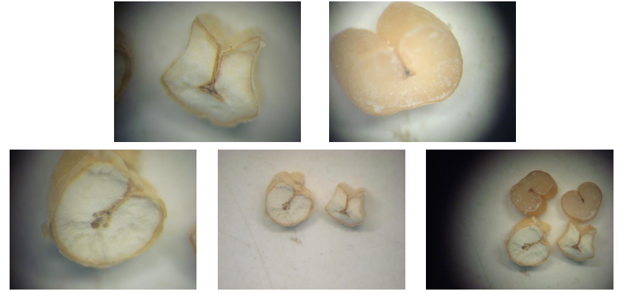Son aquellos carcomidos por larvas de insectos que atacan al cereal en planta y cuya parte afectada se presenta negruzca o sucia.
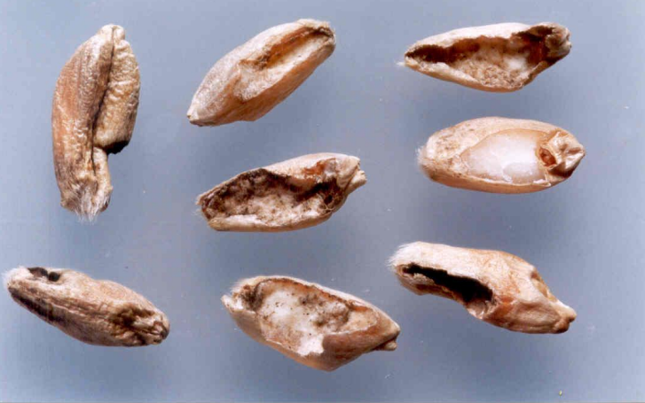Son aquellos carcomidos por larvas de insectos que atacan al cereal en planta y cuya parte afectada se presenta negruzca o sucia.
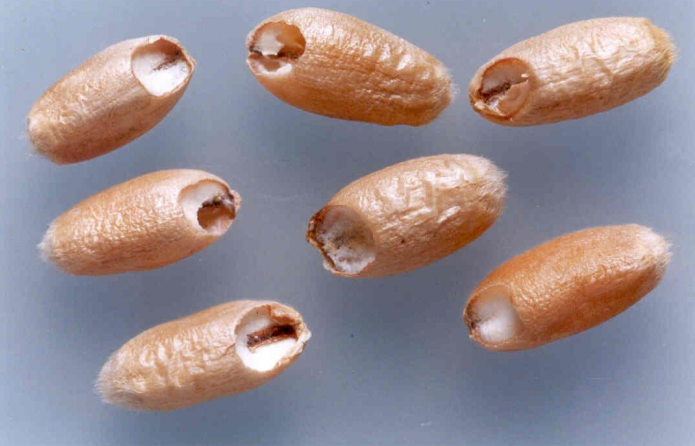Son aquellos granos o pedazos de granos (no dañados) de trigo pan que pasen por una zaranda de agujeros acanalados de 1.6mm ± 0.013mm.
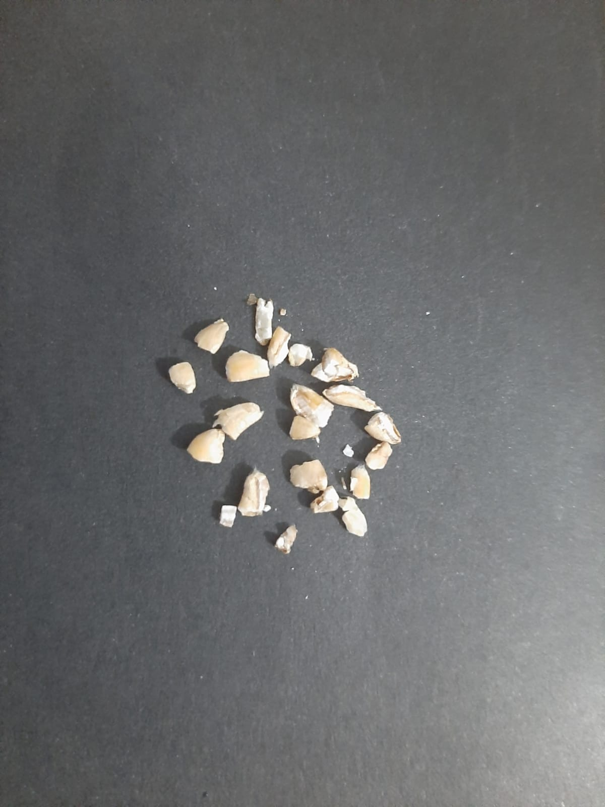Son aquellos que se caracterizan por su textura almidonosa en una mitad o más del grano, que se aprecia por una coloración externa amarillenta definida.
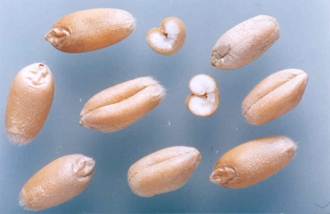{kind=link}